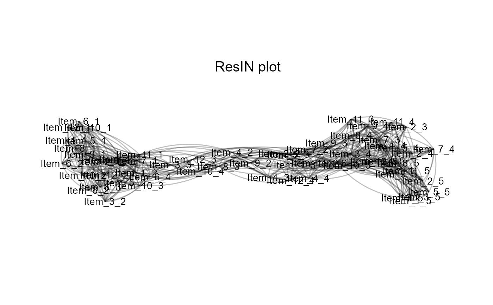

Transforms the output of the ResIN function into an qgraph object
Usage
ResIN_to_qgraph(ResIN_object, qgraph_arglist = NULL)
Arguments
- ResIN_object
the output of the ResIN function (a list with class ResIN).
- qgraph_arglist
an optional argument list to be supplied to the igraph::graph_from_adjacency_matrix function. If NULL, defaults are: list(layout = "spring", maximum = 1, vsize = 6, DoNotPlot = TRUE, sampleSize = nrow(df_nodes), mar = c(3,3,3,3), normalize = FALSE)
Value
A [qgraph]https://cran.r-project.org/web/packages/qgraph/index.html graph object.
References
Epskamp S, Cramer AOJ, Waldorp LJ, Schmittmann VD, Borsboom D (2012). “qgraph: Network Visualizations of Relationships in Psychometric Data.” Journal of Statistical Software, 48(4), 1–18.
Examples
# \donttest{
## Load the 12-item simulated Likert-type ResIN toy dataset
data(lik_data)
## Run the function:
ResIN_qgraph <- ResIN_to_qgraph(ResIN(lik_data))

# }